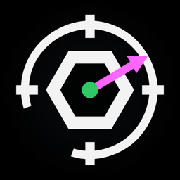

World Navaids
World Navaids is a reference to the radio beacons aircraft navigate by: more than 11,000 VORs, NDBs, DMEs and TACANs in over 230 countries, with the arithmetic a pilot does with them worked out for you. Pick a point, see the beacons around it, the bearing to each and the radial you sit on, then plan a trip from airport to airport and take it into your flight simulator.
Features
- Where Am I, a two-needle dial pointing to the two nearest VORs, with the radial you sit on from each and the bearing to the nearest NDB
- The nearest beacons with an arrow to each, its true bearing and its distance
- A map of every beacon, shaped by type, with idents and a compass rose on every VOR as you zoom in
- Search by ident, name, country, frequency or the airport a beacon serves
- Each beacon's frequency, position, magnetic variation, power and usage, its ident drawn in Morse, and a map with the line and bearing from your point
- Routes from 48,000 airports, with Auto Route to suggest a chain of VORs, and true and magnetic course, distance and time for every leg
- Export to GPX and KML for mapping apps, and to flight plan files for Microsoft Flight Simulator and X-Plane
- A built-in guide to bearings, headings, radials, magnetic north and Morse idents, with a glossary
- A widget with the nearest beacon and airport for the Home Screen and the Lock Screen
- Nautical miles or kilometres, works offline apart from the map's tiles
- No account and no tracking
Data Source
Beacon and airport data comes from OurAirports, released into the public domain. A copy ships with the app, and you can update it whenever you choose. Corrections to the data go to OurAirports, where everyone using it gets them.
The Microsoft Flight Simulator and X-Plane files are unofficial. World Navaids is not affiliated with Microsoft or with X-Plane’s makers.
Not for navigation
World Navaids is for aviation enthusiasts and flight simulation. Never use it to fly a real aircraft.
Support
Have a question, a problem, or an idea? Reach us here:
- Ask a question, help with using World Navaids
- Report a bug, something isn’t working
- Request a feature, suggest an improvement
You can also browse existing issues to see whether your question has been answered.